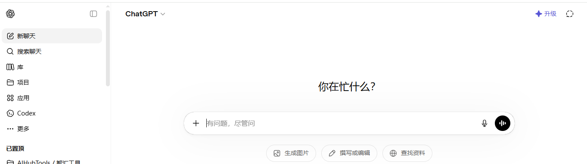
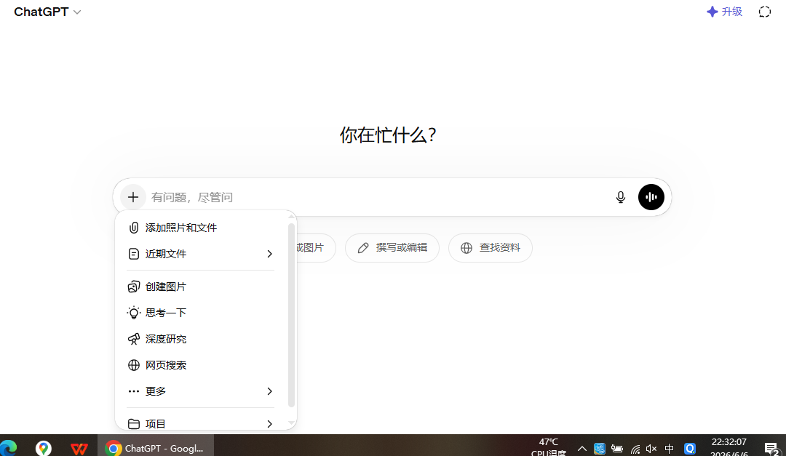

ChatGPT零基础完整使用教程：从注册入门到高阶实战全指南

一、什么是ChatGPT？ChatGPT核心介绍
ChatGPT是由美国OpenAI公司研发的生成式人工智能大语言模型，依托GPT系列底层架构，凭借强大的自然语言理解、内容生成、逻辑推理能力，成为全球普及度最高的AI工具之一。从2022年初代GPT-3.5上线，到后续GPT-4、GPT-4o多模态版本迭代，ChatGPT不再局限于简单文字对话，现已支持图片识别、语音对话、文件解析、联网搜索、代码编写等多元化功能，覆盖普通用户日常闲聊、学生课业辅导、自媒体文案创作、程序员代码开发、职场办公文案撰写等海量使用场景。
市面上ChatGPT主要分为两个使用版本，免费版与Plus付费版，二者在算力、模型版本、响应速度、附加功能上存在明显区别。免费版默认调用GPT-3.5-turbo模型，无月度订阅费用，能够满足基础问答、短文撰写、简单文案生成需求；ChatGPT Plus每月付费订阅，解锁GPT-4、GPT-4o多模态模型、联网浏览、自定义GPTs插件、DALL·E绘图等高级功能，适合高频深度使用的办公人群、创作者与研发人员。除此之外，OpenAI开放API接口，企业和开发者可通过API调用GPT模型，接入自有软件、网站、智能硬件项目，也是目前各类第三方套壳GPT工具的底层来源。
很多新手容易混淆ChatGPT和OpenAI的关系，OpenAI是研发公司，ChatGPT是其面向C端用户推出的产品名称，GPT则是底层模型代号，这三者是从属关系。除网页端官网使用外，ChatGPT现已上线官方手机App，安卓与iOS平台均可下载，实现移动端随时随地对话使用。
二、ChatGPT注册详细步骤（新手零门槛指南）

想要正常使用官方原版ChatGPT，第一步需要完成OpenAI账号注册，注册流程分为邮箱注册、手机号验证两大关键环节，也是绝大多数新手最容易踩坑的环节。首先打开OpenAI官方网页，选择Sign up注册按钮，输入个人可用邮箱，推荐使用Outlook、Gmail等海外邮箱，国内QQ邮箱、163邮箱部分场景也可正常接收验证邮件，填写完毕后点击发送验证码，在邮箱内打开OpenAI发来的邮件链接完成邮箱校验。
邮箱验证通过后进入手机号验证环节，OpenAI暂未开放中国大陆手机号直连注册，需要选用支持的海外地区手机号接收短信验证码，这是注册失败最高发的步骤。完成短信验证后设置账号登录密码，密码建议大小写字母+数字组合，提升账号安全性，密码妥善保存避免丢失。全部信息填写完成即可登录OpenAI后台，自动跳转ChatGPT对话主页，至此账号注册全部完成。
注册常见问题汇总：邮箱收不到验证码大多是邮箱拦截了海外邮件，可前往垃圾箱查找；手机号收不到验证码优先更换可用区号，避开风控高发地区；提示地区不支持服务，代表当前IP所属区域未被OpenAI开放服务，需要更换合规网络环境。
三、ChatGPT首页界面分区详解

成功登录后进入ChatGPT主对话页面，整体页面分为左侧导航栏、中间对话区、右侧功能面板三大板块。左侧导航栏主要存放历史对话记录，所有和AI的聊天会话会自动保存，支持自定义会话命名、删除无用对话、新建空白对话；顶部新建对话按钮是高频使用功能，每当开启全新问题方向，建议新建对话，避免上下文历史内容干扰AI回答逻辑。
页面中间是核心对话交互区域，上方展示AI回复内容，底部输入框用于输入用户提问内容，输入框右侧附带附件上传按钮、语音输入按钮。GPT4o版本支持直接上传PDF、Word、图片文件，AI自动读取文档内容并根据文件内容作答，免费GPT3.5仅支持纯文字输入，无法上传文件。
右侧面板为模型切换与功能设置区域，免费用户仅能选择GPT-3.5-turbo模型，Plus订阅用户可自由切换GPT-4、GPT-4o、GPT-4o mini等多款模型，同时可以开启联网搜索功能、启用第三方插件、打开自定义GPTs智能体。页面右下角存在设置按钮，可进入系统设置修改个人资料、调整对话主题、切换深色/浅色模式、清空全部聊天记录。
四、ChatGPT基础实用功能与日常使用方法

1.日常问答咨询：最基础用法，直接在输入框输入问题，AI实时输出答案，涵盖科普知识、生活常识、旅游攻略、情感解惑等内容，替代传统搜索引擎碎片化查找信息，答案逻辑完整条理清晰。
2.各类文案生成：学生可以借助GPT撰写读书笔记、课程论文大纲、演讲稿；自媒体从业者撰写短视频脚本、公众号推文、带货文案；职场人员生成工作总结、汇报文稿、商务邮件，只需要简单描述需求方向，AI快速生成初稿，后续人工微调优化即可大幅节约写作时间。
3.语言翻译与润色：支持全球上百种语言互译，不止简单字面翻译，还可以对中文、英文文案做语法修正、语句润色，优化书面表达，留学文书、英文简历修改是热门使用场景。
4.解题与学习辅导：中小学数理化题目、大学专业课知识点讲解、考证备考知识点梳理，输入题目原文，GPT分步拆解解题思路，辅助自学提升效率。
新手使用基础功能核心技巧：提问尽量具象化，不要输入过于宽泛的内容，例如想要一篇美食文案，不要只写“写美食文案”，补充“500字火锅探店短视频文案，口语化接地气”，AI输出内容贴合需求度会大幅提升。
五、ChatGPT高阶使用技巧（提示词工程+场景进阶用法）

想要最大化发挥ChatGPT能力，重点掌握提示词（Prompt）撰写技巧，也是高阶玩法的核心。一套优质提示词包含身份设定、任务要求、格式规范、约束条件四个要素，先给AI指定角色，比如“你是从业10年资深新媒体主编”，再明确需要完成的任务、输出字数、排版格式、规避内容限制。
角色扮演是经典高阶用法，让GPT化身律师、设计师、程序员、理财顾问等专业角色，依托对应行业知识输出专业化内容，大幅提升回答精准度。其次链式提问，拆分复杂大任务为多个小问题分步提问，比如做项目方案，先让AI梳理框架，再分段填充细节，避免一次性需求过多导致内容空洞。
Plus用户专属高阶功能：自定义GPTs，可以上传专属知识库，训练专属AI助手，例如企业产品知识库上传后，打造专属客服AI；联网功能开启后，GPT可以实时抓取全网最新资讯，突破模型知识库截止时间限制；多模态识图功能，上传照片、表格、手写试卷，AI识别图片内容完成计算、解析、总结。
代码用户常用技巧：程序员输入开发需求，GPT生成前端、后端各类编程语言代码，还能对现有代码查错、优化、注释编写，极大降低软件开发入门门槛。
六、五大高频实用使用场景落地案例

场景1：办公职场：行政人员利用GPT整理会议纪要、生成规章制度；财务人员整理报表文字说明；HR撰写招聘文案、面试问题，缩短80%文案耗时。
场景2：自媒体创作：短视频博主批量生成选题、口播文案、标题；图文作者批量产出干货文章，搭配AI绘图工具完成配图。
场景3：学生学习：考研专业课考点整理、作文素材积累、外文文献翻译，借助AI梳理晦涩难懂的专业概念。
场景4：个人效率规划：定制健身计划、旅行路线规划、读书清单、作息计划表，根据个人身体、时间情况定制个性化方案。
场景5：编程开发：新手自学编程时，借助AI答疑解惑、排错调试，零基础快速入门代码编写。
七、ChatGPT常见报错与使用FAQ
Q1：对话提示网络报错无法发送消息怎么办？
A：大概率是IP环境波动，刷新页面或者新建对话重试，长时间持续报错更换网络环境即可。
Q2：免费版GPT回答内容简短、逻辑差如何优化？
A：优化提示词细节，增加输出篇幅要求，限定分段格式，避免指令模糊。
Q3：ChatGPT Plus开通扣费失败是什么原因？
A：支付方式不支持，OpenAI仅支持指定境外信用卡，国内银行卡无法直接订阅。
Q4：第三方免费GPT和官方原版区别？
A：第三方大多调用OpenAI API搭建，存在额度限制、延迟偏高、隐私泄露风险，追求稳定优先使用官网原版。
八、总结：如何合理高效使用ChatGPT
ChatGPT作为通用性极强的人工智能工具，核心定位是辅助人类提升效率，而非完全替代思考创作。普通用户优先从免费GPT3.5入手，熟练掌握基础提问和简单提示词用法，满足日常学习、办公需求；深度创作者、研发人员可按需开通Plus解锁GPT4多模态能力，挖掘插件、自定义GPT等高阶功能。
在使用过程中注意甄别AI生成内容，AI偶尔会出现事实性错误、信息编造问题，关键数据、专业内容务必二次核验，合理借助AI扬长避短，才能真正借助人工智能实现个人效率提升。随着OpenAI持续迭代更新，GPT功能还在不断扩充，持续关注版本更新可以第一时间体验全新实用功能。